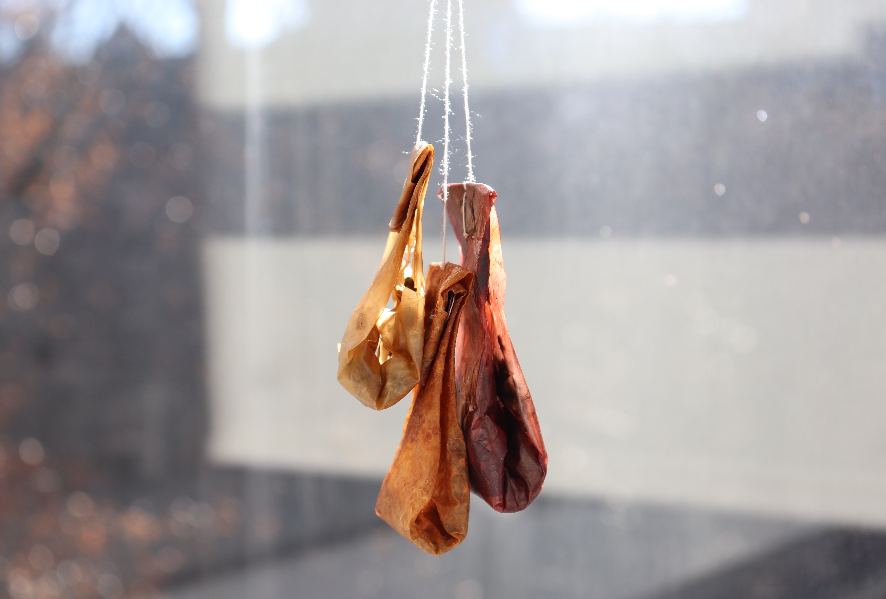

Scoby, or symbiotic culture of bacteria and yeast, provides opportunities to create sustainable applications in creating biodyes, bioplastics, and biofabrics. How can we "mother" designs with microorganisms to grow raw ingredients, materials, food, and products?

01. EXPERIMENT: SUGAR ALTERNATIVES
Scoby can serve as a sustainable alternative to a variety of materials we use daily, from fabrics and dyes to plastics. Our experiment first explored different sugar alternatives to better understand it as an organism.
We grew our mother culture with the original recipe, while altering the sugar type in 5 new cultures. These sugar alternatives included brown sugar, fructose, glucose, honey, and stevia. While all of these alternatives vary in sugar content and viscosity, we added 1/2 cup to each new culture.
(Scoby Mother Culture)

(After 1 Week)
(After 3 Weeks)
From this experiment, we found that syrups, such as honey and glucose, have higher sugar contents, causing the growth of molds. We noticed that the scoby’s feeding off white sugar and Stevia were the only ones that grew mold, where the Stevia grew a smoother scoby sheet than the white sugar scoby. If we were to redo the experiment, we would boil down the water and tea before adding to the scoby, dissolving all sugars completely. Other possible explanations of our results included overfeeding, as we fed them every week.
Following this experiment, we wanted to test more sugar alternatives, specifically rotten fruits. In our last experiment, we found that fructose was able to grow a very thin scoby sheet, so we want to see if and which fruits would best be used to grow scoby. If successful, this could be used to address agricultural and household waste, and upcycling rotten produce to feed scoby. We used a new scoby growing recipe (shown below), and chose three fruits with varying sugar content: blackberries (low), apples (medium), and bananas (high).
Fructose Table Source: Harmony Hill

(Extracted Fruit Sugars)

(Scoby - Apple)

(Scoby - Banana)


(Scoby - Blackberry)
After a week of growth, we decided to conclude the experiment. We noticed that the apple scoby grew the most identifiable mold out of the 3 and produced the thinnest sheet. The banana sheet was clearly the thickest, but also incorporated some of the banana mush. Out of the three, the blackberry scoby was the most successful as it was the only one that had not molded, despite the crack patterns on the top.
02. APPLICATION: TEA BAGS
Our mother scoby was freeze dried, to which we discovered it mostly consisted of sugar. Each of our three sheets of scoby were air dried, folded, and sewn into tea bags holding teas of various sizes. As a material, scoby dissolves and takes on the taste of its contents when boiled, allowing tea drinkers to customize their tea bags while avoiding the microplastics and waste that comes with store bought tea bags.
These tea bags also serve as a model for sustainable designs. Through its creation, a relationship is developed between the mother (us) and the material (scoby). We care for and nurture it, and thus, are completely knowledgable of where our materials and products come from. It creates a cycle in which the scoby feeds off tea, and is later used to create tea bags, but the media it sits in is also fermented to tea (commonly known as kombucha).
(Freeze Dried Mother Scoby)

(Dried Fruit Scobys)
(Scoby - Apple)
(Scoby - Banana)
(Scoby - Blackberry)

This project explores "motherhood" as a methodology, world-view and value system, and how we can use it to create more ethical, sustainable, and equitable contemporary design practices. As an emerging field, biodesign is centered around exploring how to work with living organisms to make raw ingredients, materials, objects, clothes, and buildings through growtih and reproduction - ultimately exploring the world of non-human mothers and how they shape the world around us. How can we mother our own designs?
In this project, I grew and experimented with Scoby (symbiotic culture of bacteria and yeast), by first testing different sugar alternatives, and then expanding it to address agricultural waste. Our scobys were ultimately made into tea bags, to display a circular model of growing and using scoby as a material. This project will be featured in the eventual open syllabus that will result from this course.
→ View the full experiment log here
→ Fall 2021 (8 Weeks)
→ DSGN 268: Biological Design
→ Instructor: Orkan Telhan
→ Coparents: Brynn Lilley, Myahn Walker